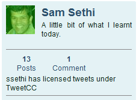
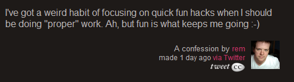

At the end of January 02009 Andy Clarke was looking for a way to license twitter messages for an upcoming book. The publisher wanted to make sure the rights were cleared before any of the tweets could be re-used in print. This posed a problem, Andy needed a way for people to easily pledge their messages and a way to record it for future reference. This sparked a discussion about how this could be done as painless as possible. With a little PHP hackery we managed to piece together a basic three page site in short order.
Twitter is a microblogging system based around 140 character SMS length messages. The service offers an API, a way for other programs to extract data from each other, which was key in allowing us access to the messages and user information.
We setup the twitter account @tweetcc and instructed people to send it a message with how they wish to dedicate their tweets. The ability to reply to other users through the @username convention allowed us to watch for dedications across the millions of twitter accounts. We tried to make it as easy as possible by creating automatic links to post various Creative Common Licenses. As of writing, over 3,400 people have already pledged the messages in their twitter stream for others to use.
Support for the project was garnered from the Creative Commons when they blogged about “TweetCC Lets You CC License Your Twitter Feed” as well as a WIRED magazine article entitled: “Author Makes A Case for Creative Commons on Twitter“. Andy weighed in with his thoughts on the process and the outcome of the project on his own blog with “Designing tweetCC“. On top of all that, there were plenty of posts on the web excited about the idea and others chastising it. Even today, it’s really interesting to see the feedback, both direct and in-direct.
One of the biggest arguments against the need for tweetCC was the assumption that you can’t copyright a single twitter message. This is interesting for two reasons; firstly everyone becomes an arm-chair lawyer and thinks they know best. Secondly, even with legal advice, it is still a grey area and if someone with deeper pockets wants to sue you for copyright infringement, they have that right. Jason Kottke mentions this in his post “Can You Copyright a Tweet?“. TweetCC is a way to short-circuit that whole argument. Sure, maybe twitter messages aren’t novel enough to be protected against copyright, but that’s your and your lawyer’s opinion. By licensing your twitter messages, whether you believe they are copyrightable or not, you’re explicitly allowing the use—no questions asked.
I did a basic breakdown of the frequency of license declarations we have in the database. This is by no means perfect, I was matching URLs in the tweets as well as plain text strings to the corresponding licenses. There are probably a few false-positives as well as some misspellings that were not categorized, but the general breakdown is as follows:
As you can see the largest contribution has been the “Public Domain” license, followed by “Creative Commons By Attribution”, then “Share-Alike Non-Commercial”. I attribute this to the default license being the Public Domain version. People are happy to trust others to recommend what is best, as well, they might not consider their tweets copyrightable to begin with, so to them, what does it matter how lax or restrictive the license? The attribution license is the second largest group. With most uses of the twitter messages, you will probably include a screen shot or the full text of the message, including the twitter username. This should suffice for any attribution requirement. The third largest category is the share-alike non-commercial. This would allow for people to “retweet” your messages and allow others down the line to do the same, but this time it could not be used for profit activities, such as books, etc.
The most up-to-date version of this graph can be found on the tweetCC website at http://tweetcc.com/stats/
Building a Platform
We created tweetCC for very selfish reasons, but realized the power of extending it as a platform. There is a lot of value in our database of users and their licenses and it’s best to not fragment the market into several different, competing services to pledge your dedications. We decided to open-up the database with an API to allow other twitter applications access.
For me, it is far more interesting to build the tool than the application. The tweetCC application is useful, but limiting. As a tool the tweetCC platform becomes much more ubiquitous. It can supplement other applications, such as your desktop twitter app or other online twitter groups. As the stream of information comes in, it could check to see if those usernames have licensed their tweets, if they have, you might get a small icon and a link to demonstrate that the user is open about re-use and you can click to see the their pledge.
Third-parties
TweetCC has been used by third-parties to make use of the existing code-base to gather other license declarations. We were happy to help with other projects, it makes more people aware of tweetCC without white-labeling, as well as being the right thing to do in general.
TwitBlogs
Another early site to use our API was TwitBlogs. They are a service which allows you to macro-blog and publish to the micro-blog. It is all based on twitter accounts, so they used the tweetCC API to check to see if the user had give a declaration, and if they did, add a quick line in the profile to alert people to this fact.
WeirdHabit
A few friends were really interested in the way tweetCC worked, so I sent them my code which they promptly rewrote all but about 3 lines of and published it for anyone else to use. It is now possible to make your own site which is grabbing data from twitter and aggregating it into a single place.
Their site, WeirdHabit.com is attempting to watch twitter for the words “Weird Habit” and capture them into a stream of everyone’s weird habits. For example, Remy Sharp’s post about about his weird habits was captured by the software and saved into their database. When this happens, it also uses the tweetCC API to look-up and see if the user @rem has also dedicated his tweets. In this case, he has, so it added the icon. Now when people browse WeirdHabit.com and see interesting quotes and posts, they can easily click through and read any copyright restrictions.
Join the fun!
We created two API files and are open to working with others to create more formats as needed. The first is an incredibly simple javascript file that you call and pass in a username. It will return a string if the user has pledge their tweets with tweetCC.
http://tweetcc.com/api/tweetcc.js.php?username=<username to look-up here>
You don’t need to know how to code to add this into your website or application. You simply need to add one line of javascript.
<script type="text/javascript" src="http://tweetcc.com/api/tweetcc.js.php?username=<username to look-up here>"></script>
This will call the tweetCC server and output a link back to that user’s page describing their dedication.
The second way to access our API is more complex, but not any more complicated. We have created a JSONP end-point to which you can pass multiple comma seperated usernames and get back a JSON object.
http://tweetcc.com/api/tweetcc.json.php?username=optionalBot,briansuda&callback=tweetcc
This will return tweetcc({"optionalbot":true,"briansuda":false}) with the proper callback function name, etc. This can easily be used in your application to look-up names and store them locally in your own database. As new users appear you can make the call to tweetCC, but also on a timely basis you can pass all the username without a dedication in your database and check to see if any of them have since updated their tweetCC status. This way it is possible to batch process lots of names at once and keep your local database fresh, without having to ask tweetCC with every new message.
TweetCC Roadmap
I really enjoyed working on this little micro-site. Hopefully, it will find more and more uses in the future and become a repository for others to look-up and use. We are certainly open to more opportunities to work with other third-parties to use and integrate our system into their applications. Let us know how we can help.